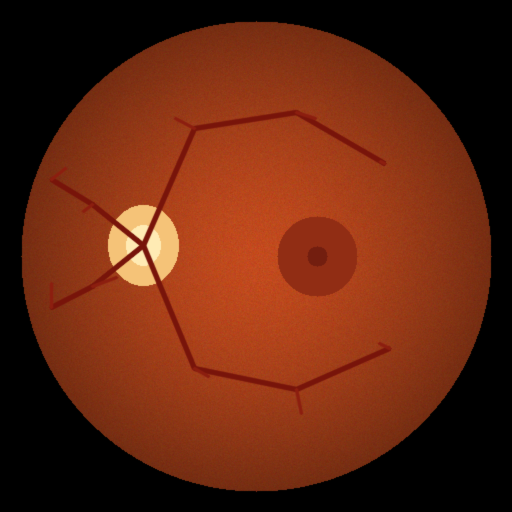
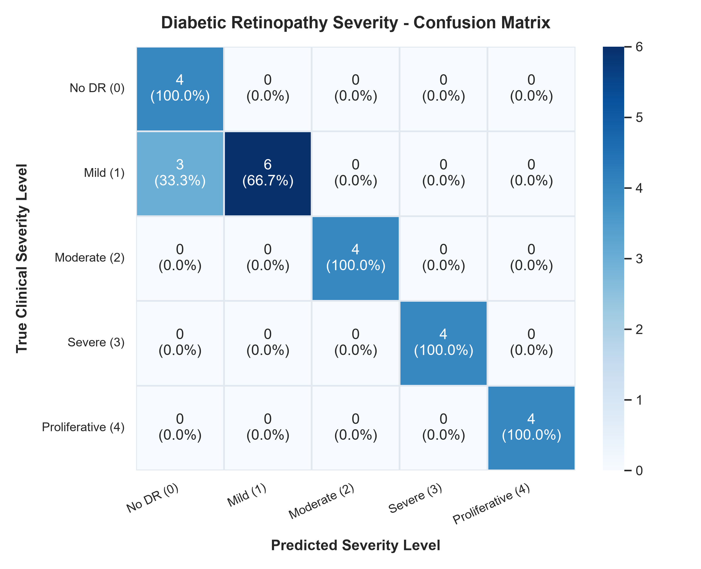
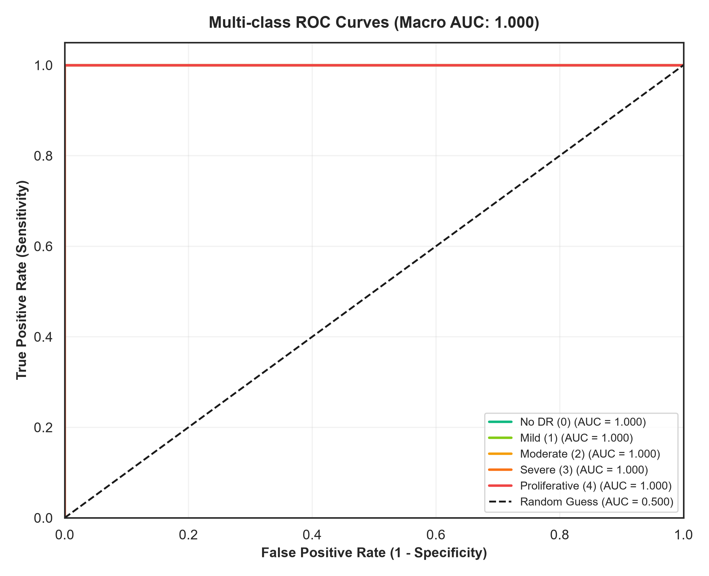

See Beyond
the Image.
Clinical-grade deep learning decision support for automated diabetic retinopathy detection. Ingest digital fundus photography, evaluate microvascular biomarkers, and stratify risk across the 5-stage ICDR scale with dual transfer architectures.

Dual-platform architecture: VGG16 powers high-capacity web screening (90.0% accuracy), while MobileNetV2 is reserved for the Flutter Android mobile application.
Eliminates illumination variance across heterogeneous clinic cameras via weighted Gaussian subtraction, isolating subtle microvascular lesion patterns.
Full probability calibration across all five stages of the International Clinical Diabetic Retinopathy severity scale, providing immediate risk stratification.
Retinal Screening & Analysis
Ingest digital color fundus photography and compute automated multi-model deep learning inference with ranked alternative perspectives.
No Retinal Scan Loaded
Pick a verified reference sample or upload a color fundus image on the left to begin multi-model inference.
Model Performance & Benchmarks
Empirical diagnostic metrics for VGG16 (Website Screening Model), training convergence trajectory, and multi-platform architecture allocation.
Cross-entropy loss and top-1 accuracy curves across fine-tuning epochs from training_history.json.
Observed clinical ground truth vs. predicted classification frequencies.

True positive rate vs. false positive rate across decision thresholds on the held-out test cohort.

Authentic empirical metrics for the two active production models: VGG16 (Dedicated Website Engine) and MobileNetV2 (Dedicated Flutter Mobile App Engine).
| Model Architecture | Test Accuracy | Precision | Recall | F1 Score | ROC-AUC | Train Time | Status |
|---|
| Disease Grade | Precision | Recall | F1-Score | Test Support |
|---|
results/model_comparison.json and results/metrics.json.
About RetinaCare AI
A deep learning decision support framework engineered for high-throughput preliminary screening of diabetic microvascular eye disease.
Diabetic Retinopathy (DR) is the primary driver of preventable blindness among working-age adults globally. In its early microvascular stages, diabetic retinopathy progresses asymptomatically. Over 90% of severe vision loss cases can be prevented with regular, automated fundus screening and timely clinical referral.
2. Masking: Circular aperture cropping to isolate retinal field.
3. Normalization: Ben Graham weighted Gaussian subtraction.
4. Extraction: Deep convolutional transfer representations.
5. Assessment: Calibrated 5-stage ICDR clinical classification.
• Address clinical class imbalance via balanced focal and cross-entropy weighting.
• Provide transparent probability distributions for all 5 disease stages.
• Guarantee complete privacy with strict in-memory execution.
Trained and evaluated on the APTOS 2019 Blindness Detection cohort, comprising expert-adjudicated digital color fundus images categorized across the 5-point ICDR severity scale. All retinal processing occurs in volatile memory without permanent storage of patient biometric imagery.
Contact RetinaCare AI Team
Connect with the research team, clinical advisors, and project authors at the Department of Computer Science & Engineering, GM University.
GM University, Post Box No. 4, Davanagere - 577006, Karnataka, India.
Specialization in Deep Learning, Medical Imaging, and AI Decision Support.
For technical discussions regarding VGG16/MobileNetV2 transfer weights, Graham illumination normalization, or validation benchmarks.
Welcoming partnerships with ophthalmologists, diabetic clinics, and retinal screening programs to evaluate external clinical cohort generalization.